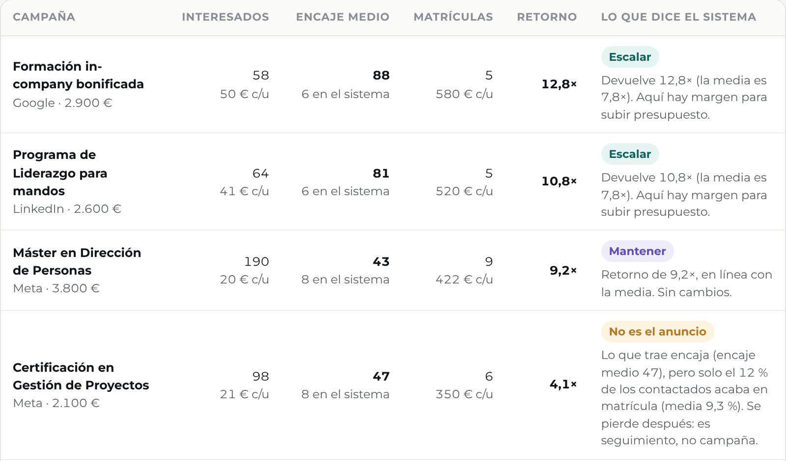
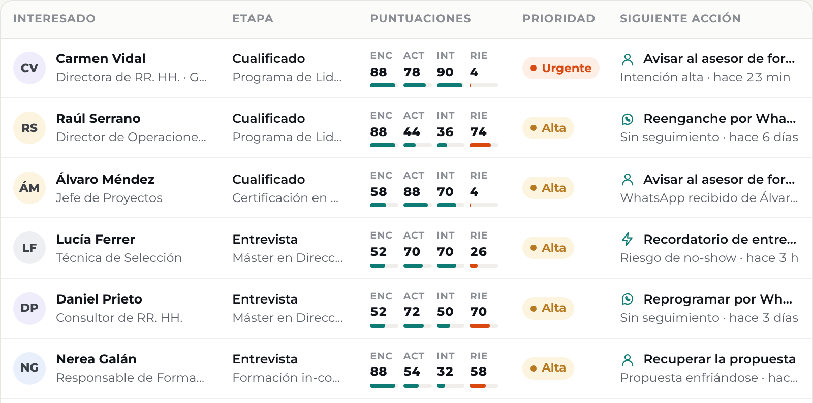

¿Cuántas matrículas te trajo cada anuncio?
Deja de leer clics. Mira matrículas por campaña.
Pantalla real · datos simulados
Qualivo Intelligence · Anuncios

Esta trae matrículas: escalar →
Aquí falla el seguimiento →

Diseñamos tu captación y tu proceso de venta. Y lo ves todo en un panel.
Pide una demo →
Sabes con quién hablar primero.
Cada solicitud llega puntuada, con su porqué y su siguiente paso.
Pantalla real · datos simulados
Qualivo Intelligence · Oportunidades

↑ Primero, esta. Y por qué
Diseñamos tu captación y tu proceso de venta. Y lo ves todo en un panel.
Pide una demo →
El sistema prepara el mensaje. Tu equipo lo aprueba.
Seguimiento en minutos, sin perder el trato humano. Y cuando hace falta una persona, te avisa.
Pantalla real · datos simulados
Conversaciones

WhatsApp, correo y llamadas en un solo sitio
El agente escribe con el contexto de cada solicitud y se aparta cuando hace falta una persona.
Pide una demo →
Tu próxima matrícula ya está en tu base de datos.
Pregunta «¿quién dijo que empezaría en la próxima convocatoria?» y te lo dice.
Pantalla real · datos simulados
Pregúntale a tu base de datos
Quién pidió información y dijo «más adelante», a quién le toca volver a escribir y por qué. En lenguaje normal.
Pide una demo →